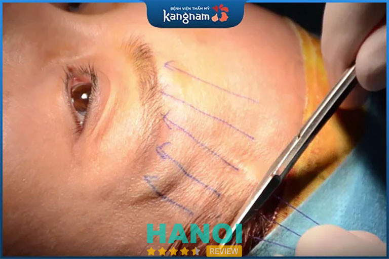
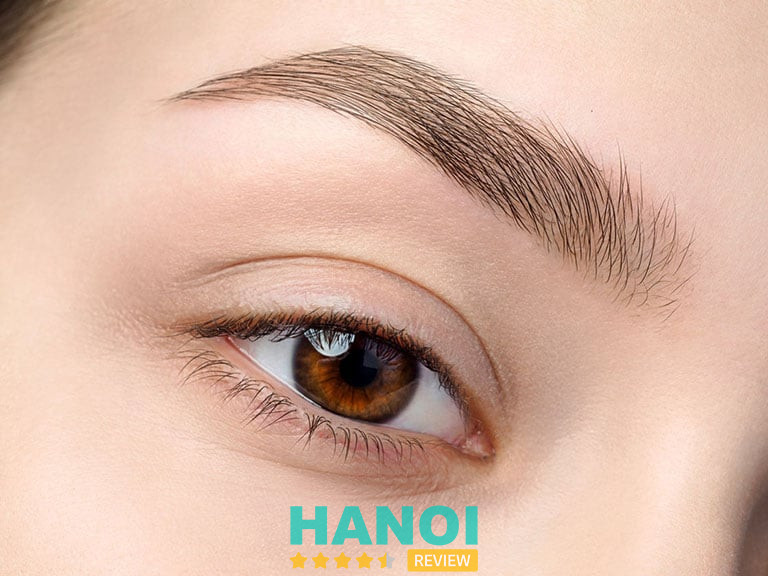
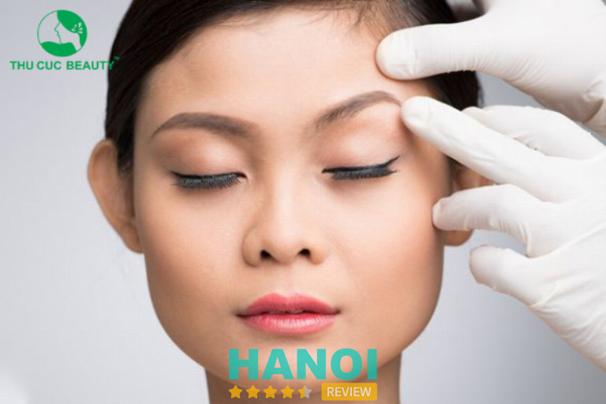
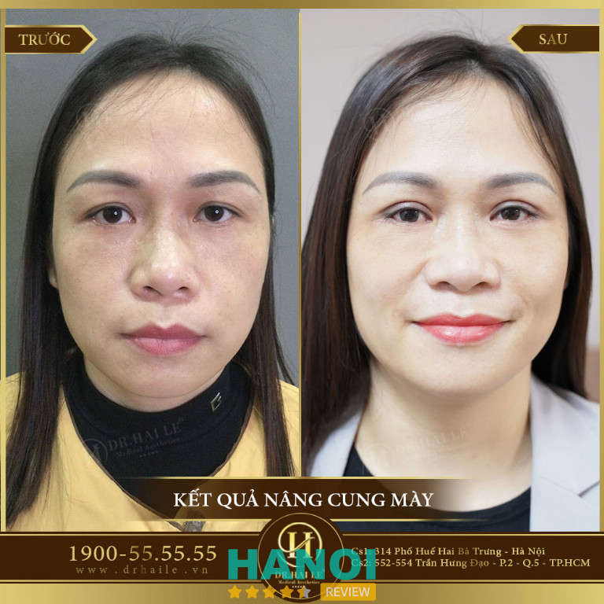
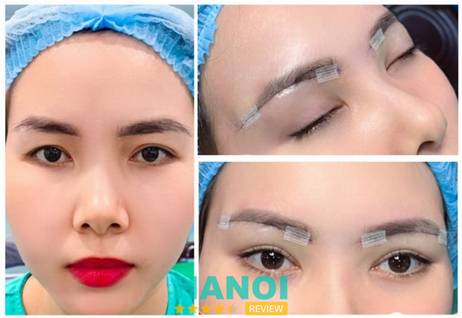
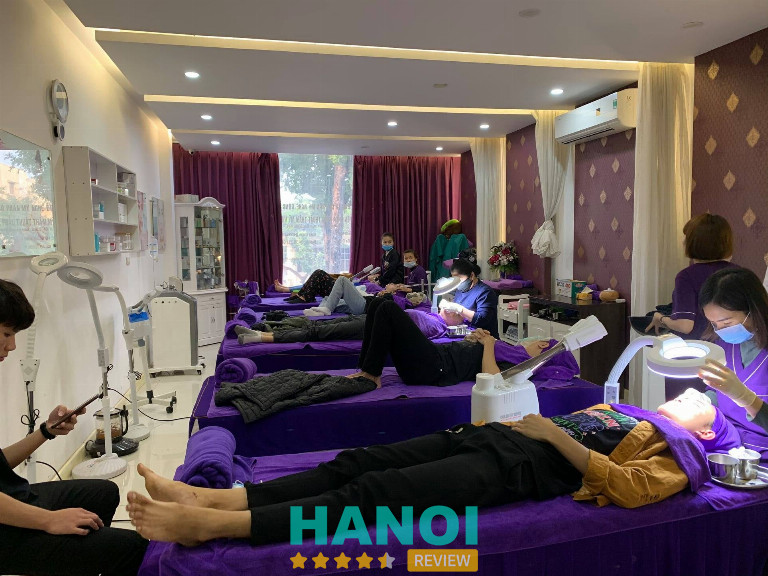
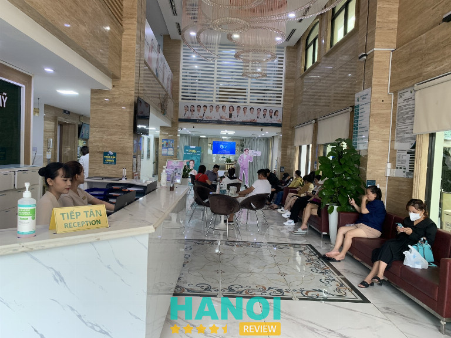

10 Địa chỉ phẫu thuật treo chân mày tại Hà Nội đẹp, an toàn
Bạn đang cần tìm địa chỉ phẫu thuật treo chân mày tại Hà Nội chất lượng? Đừng lo lắng, vì HaNoiReview luôn thấu hiểu điều đó và sẽ gửi đến bạn đọc danh sách 10 cơ sở uy tín nhất ngay trong nội dung bài viết dưới đây.
Top 10 Địa chỉ phẫu thuật treo chân mày ở Hà Nội uy tín nhất
Chân mày là một điểm nhấn quan trọng trên gương mặt, khi có bộ lông mày đẹp, chuẩn form, các đường nét khuôn mặt sẽ ngay lập tức được tôn lên trông thấy. Treo chân mày là một trong các thủ thuật thịnh hành nhất hiện nay đang được nhiều chị em quan tâm tìm kiếm.
Đây cũng là một trong các phương pháp cần có chuyên môn cũng như mắt nhìn thẩm mỹ tốt để không gây ra các biến chứng sau khi treo, nâng chân mày. Một số địa chỉ phẫu thuật treo chân mày ở Hà Nội chất lượng, uy tín được gợi ý sau đây là các cơ sở có đội ngũ chuyên viên, bác sĩ thẩm mỹ giỏi sẽ giúp bạn có được đôi lông mày như ý.
Bệnh viện thẩm mỹ Kangnam
Cái tên đầu tiên trong danh sách các địa chỉ phẫu thuật treo chân mày tại Hà Nội mà chắc chắn sẽ được đông đảo bạn đọc ủng hộ không đâu khác chính là Bệnh viện thẩm mỹ Kangnam. Đây là một trong các cơ sở làm đẹp ở khu vực có quy mô lớn và sở hữu hệ thống chi nhánh hùng hậu ở nhiều nơi trên cả nước.
Với nhiều phương pháp treo chân mày như nội soi, phẫu thuật, … Bệnh viện thẩm mỹ Kangnam mang đến sự lựa chọn đa dạng sao cho phù hợp nhất với từng đối tượng khách hàng. Tất cả đều được thực hiện bởi đội ngũ y bác sĩ thẩm mỹ giàu kinh nghiệm, có chuyên môn cao và được đào tạo bài bản về nâng cung mày kỹ thuật tiên tiến.

Trong số các y bác sĩ phẫu thuật treo chân mày tại Bệnh viện thẩm mỹ Kangnam, nổi bật có một số chuyên gia là người Hàn Quốc. Đích thân các chuyên gia này cũng sẽ thực hiện tư vấn, thăm khám và ứng dụng các thủ thuật an toàn nhất để làm đẹp cho đôi lông mày của bạn.
Là một cơ sở thẩm mỹ ở Hà Nội có thâm niên hoạt động lâu năm, Bệnh viện thẩm mỹ Kangnam triển khai đầu tư bài bản hệ thống máy móc ngay từ những ngày đầu tiên. Cập nhật liên tục các công nghệ tiên tiến từ các nước làm đẹp đầu ngành để mang tới cho khách hàng những giải pháp cải thiện nhan sắc không đâu có thể có được.
Đội ngũ tư vấn viên và các nhân viên chăm sóc tại Bệnh viện thẩm mỹ Kangnam cũng được huấn luyện theo quy trình chuyên nghiệp. Sự tận tâm, chú đáo của họ giúp khách hàng tin chọn làm đẹp tại Bệnh viện thẩm mỹ Kangnam có thể an tâm trước, trong vào sau quá trình thẩm mỹ.
Quy trình phẫu thuật treo chân mày tại Bệnh viện thẩm mỹ Kangnam được thực hiện theo các bước khép kín trong môi trường vô khuẩn. Các dụng cụ, trang thiết bị cũng được khử khuẩn sạch sẽ trước và sau khi sử dụng để không có các rủi ro gây hại đến sức khỏe của khách hàng.
Được sự tin tưởng của phần đông khách hàng, Bệnh viện thẩm mỹ Kangnam đã giúp hàng ngàn người “lột xác” để có diện mạo hoàn hảo. Không chỉ thông qua dịch vụ phẫu thuật treo chân mày mà nơi đây còn cung cấp hàng loạt các phương pháp làm đẹp ấn tượng khác mà bạn nên tham khảo.
Thông tin liên hệ:
- Địa chỉ: 190 Trường Chinh, P. Khương Thượng, Q. Đống Đa, Hà Nội
- Điện thoại: 0963 732 244
- Website: benhvienthammykangnam.vn
- Facebook: FB.com/benhvienthammykangnamhanoi
Thẩm mỹ viện Hồng Hà
Thẩm mỹ viện Hồng Hà là thành viên của Bệnh viện Đa khoa Hồng Hà. Với chức năng chuyên sâu về các dịch vụ thẩm mỹ, nơi đây đã mang đến cho nhiều khách hàng sự hài lòng cùng với vẻ đẹp mỹ mãn bằng công nghệ mới được cập nhật liên tục.
Tất cả các khách hàng khi đăng ký sử dụng dịch vụ phẫu thuật treo chân mày tại Thẩm mỹ viện Hồng Hà đều được chính các y bác sĩ có chuyên môn cao và kinh nghiệm tư vấn, thăm khám và đo vẽ tỉ lệ chuẩn để thực hiện. Đường nét cung chân mày sau khi nâng hài hòa với khuôn mặt, không sưng, không đau, không cần nghỉ dưỡng và kết quả có thể duy trì trong nhiều năm mà không xảy ra các tình trạng lão hóa, chảy xệ.
Đội ngũ nhân sự hùng hậu của Thẩm mỹ viện Hồng Hà chính là yếu tố tạo nên sự tự hào. Tất cả các thành viên, bao gồm các y bác sĩ, nhân viên tư vấn, đội ngũ y tế đều được đào tạo bài bản theo chương trình mới nhất.
Nhờ đó, mỗi khi khách hàng có bất kỳ thắc mắc nào về các kỹ thuật phẫu thuật treo chân mày hay các loại hình thẩm mỹ khác, thì đội ngũ nhân viên tại Thẩm mỹ viện Hồng Hà luôn sẵn lòng giải đáp để bạn chọn được dịch vụ phù hợp. Các y bác sĩ đều có bằng cấp chuyên môn cũng như đã từng làm việc nhiều năm trong ngành và thành công phẫu thuật treo chân mày cho hàng trăm khách hàng.
Ngoài việc trang bị hệ thống trang thiết bị, máy móc tiên tiến, Thẩm mỹ viện Hồng Hà còn là một trong các địa chỉ phẫu thuật treo chân mày ở Hà Nội có giấy phép hoạt động do Bộ Y Tế cấp. Quy trình cũng được triển khai dựa trên các tiêu chuẩn của Bộ – An toàn, chính xác và hiệu quả cao.
Với việc đáp ứng đầy đủ các tiêu chí về nhân sự, cơ sở vật chất, công nghệ hiện đại, Thẩm mỹ viện Hồng Hà chính là địa chỉ phẫu thuật treo chân mày tại Hà Nội lý tưởng cho chị em. Hãy đến và trải nghiệm những dịch vụ đẳng cấp tại cơ sở làm đẹp uy tín này.
Thông tin liên hệ:
- Địa chỉ: 16 Nguyễn Như Đổ, P. Văn Miếu, Q. Đống Đa, Hà Nội
- Điện thoại: 024 7303 0988
- Website: benhvienhongha.com.vn
- Facebook: FB.com/thammybenhvienhongha
GỢI Ý: 5 Địa chỉ lấy mỡ bọng mắt tại Hà Nội chuyên nghiệp, hiệu quả
Trung tâm thẩm mỹ Bác sĩ Vũ Thái
Với việc tập trung phát triển một địa chỉ duy nhất tại Thái Phiên, Hai Bà Trưng, Hà Nội, Trung tâm phẫu thuật thẩm mỹ Bác sĩ Vũ Thái đầu tư mạnh mẽ đều đảm bảo mỗi khách hàng đều có được trải nghiệm chất lượng, ấn tượng nhất tại đây.
Các dịch vụ Trung tâm phẫu thuật thẩm mỹ Bác sĩ Vũ Thái hiện đang phát triển và cung cấp đến khách hàng bao gồm: nâng mũi, thu gọn cánh mũi, thủ nhỏ đầu mũi, kéo dài đầu mũi, độn cằm, thu gọn môi, tạo môi trái tim, tạo khoé môi cười, nhấn mí, cắt mí mắt, bóc mỡ mắt, cắt treo cung chân mày, ….
Trung tâm phẫu thuật thẩm mỹ Bác sĩ Vũ Thái nổi tiếng là địa chỉ phẫu thuật treo chân mày không đau, không để lại sẹo và cho ra cặp chân mày hài hòa, làm sáng cả khuôn mặt. Điều này đã tạo nên niềm tin và sự an tâm để khách hàng có thể tin tưởng chọn làm đẹp tại đây.

Bác sĩ tại Trung tâm phẫu thuật thẩm mỹ Bác sĩ Vũ Thái sẽ sử dụng các thủ thuật hiện đại để khâu treo cố định cung mày mà không cần cắt da. Với một vết chích nhỏ khoảng 0.2cm phía trong cung mày sẽ không để xuất hiện các dấu vết thẩm mỹ sau khi thực hiện.
Tại Trung tâm phẫu thuật thẩm mỹ Bác sĩ Vũ Thái, sau khi thực hiện phẫu thuật treo chân mày, bác sĩ khuyến khích khách hàng có thể kết hợp cùng với kỹ thuật cắt cung mày và phun xăm lông mày để có thể đạt kết quả thẩm mỹ tốt hơn. Điều này giúp bạn có thể sở hữu một đôi lông mày hoàn hảo, mắt bắt, tăng độ duyên dáng cho cả khuôn mặt.
Khi chọn Trung tâm phẫu thuật thẩm mỹ Bác sĩ Vũ Thái làm địa chỉ phẫu thuật treo chân mày tin cậy ở Hà Nội, bạn sẽ hoàn toàn ấn tượng và an tâm với quy trình chuẩn y khóa cùng phong cách làm việc tận tình, chuyên nghiệp tại đây. Chỉ sau 2 ngày phẫu thuật, bạn đã có thể tháo băng, kết quả sẽ được nhận thấy rõ ràng sau từ 1 đến 3 tháng.
Thông tin liên hệ:
- Địa chỉ: 2B Thái Phiên, Hai Bà Trưng, Hà Nội
- Điện thoại: 0914 488 888
- Website: thammyvienmikavuthai.com
- Facebook: FB.com/ThammyMikaVuThai
Bệnh viện thẩm mỹ Thu Cúc
Bệnh viện thẩm mỹ Thu Cúc không chỉ là địa chỉ phẫu thuật treo chân mày uy tín ở Hà Nội mà còn sở hữu nhiều thủ thuật nâng cung chân mày khác như cắt cung mày Nano Cell, cắt cung mày P’Cell.
Điểm đặc biệt đầu tiên tại Bệnh viện thẩm mỹ Thu Cúc chính là mỗi khách hàng đều được đội ngũ bác sĩ giàu kinh nghiệm tư vấn kỹ càng về kỹ thuật cũng như hỗ trợ lựa chọn công nghệ phù hợp với tình trạng lão hóa, chảy xệ hay có quá nhiều da dư thừa tài vùng chân mày.
Khi hoàn thiện xong các phương pháp treo chân mày tại Bệnh viện thẩm mỹ Thu Cúc, khách hàng chắc chắn sẽ có đôi mắt tươi sáng, không còn thể hiện sự u buồn vì các nên nhắn hay các vết chân chim do da lão hóa. Các vấn đề về rãnh nhăn, sa trễ, mí mắt sụp,…. Cũng được cải thiện đáng kể.

Quy trình phẫu thuật nâng cung chân mày tại Bệnh viện thẩm mỹ Thu Cúc bao gồm 5 bước tiêu chuẩn. Các bước này được sắp xếp khoa học theo thứ tự thăm khám, tư vấn – kiểm tra sức khỏe – gây tê – phẫu thuật treo chân mày – hoàn thành quá trình phẫu thuật.
Với mức phí giao động từ 12 đến 18 triệu, ngoài việc cân nhắc về các phương pháp thì khách hàng cũng có thể chọn dịch vụ có mức giá phù hợp với khả năng tài chính của mình. Hơn nữa, Bệnh viện thẩm mỹ Thu Cúc cũng thường xuyên có nhiều ưu đãi, giảm giá hấp dẫn, đây là cơ hội để bạn có thể làm đẹp một cách tiết kiệm mà vẫn đảm bảo chất lượng ở mức tốt nhất.
Các yếu tố quan trọng như bác sĩ, cơ sở hạ tầng, vấn đề an toàn vệ sinh, khử khuẩn vô trùng, trang thiết bị hiện đại, … tại Bệnh viện thẩm mỹ Thu Cúc luôn được đảm bảo ở mức tốt nhất. Hiện nay, bệnh viện đang có chương trình ưu đãi lên tới 50% khi đặt lịch sớm.
Đừng bỏ lỡ cơ hội tại một trong số các địa chỉ phẫu thuật treo chân mày đẹp, chất lượng này ở Hà Nội. Bệnh viện thẩm mỹ Thu Cúc chưa bao giờ làm khách hàng thất vọng và bạn cũng sẽ nhận được những trải nghiệm ấn tượng tương tự.
Thông tin liên hệ:
- Địa chỉ: 1B Yết Kiêu, Hoàn Kiếm, Hà Nội
- Điện thoại: 0964 080 999
- Website: benhvienthammythucuc.vn
- Facebook: FB.com/thammythucuc.com.vn
THAM KHẢO: 10 Địa chỉ thu gọn cánh mũi tại Hà Nội uy tín bác sĩ tốt
Viện thẩm mỹ y khoa Dr. Hải Lê
Phẫu thuật nâng cung chân mày là một trong các thủ thuật đòi hỏi yêu cầu y tế, kinh nghiệm của bác sĩ cũng như trang thiết bị cao. Việc lựa chọn các địa chỉ phẫu thuật treo chân mày tại Hà Nội cũng cần được xem xét thận trọng để đảm bảo an toàn và có độ thẩm mỹ hài lòng nhất như bạn mong muốn.
Trong hàng loạt các cơ sở làm đẹp ở Hà Nội, Viện thẩm mỹ y khoa Dr. Hải Lê là một điểm sáng nơi cung cấp các dịch vụ treo chân mày tiên tiến. Nơi đây đã cùng không ít khách hàng chính phục nhan sắc, loại bỏ nếp nhăn mà khuyết điểm vùng lông mày cũng như vùng mắt nói chung.
Viện thẩm mỹ y khoa Dr. Hải Lê đã nhận được nhiều lời khen từ người dân Hà Nội đặc biệt trong các phương pháp treo chân mày. Điều này minh chứng cho vị thế của thẩm mỹ viện trên thị trường, đồng thời cũng góp phần khẳng định chất lượng hoàn hảo của dịch vụ làm đẹp tại đây.

Đội ngũ bác sĩ cũng được đào tạo và dẫn dắt bởi Dr. Hải Lê là người đã có nhiều năm kinh nghiệm trong lĩnh vực thẩm mỹ chuyên sâu toàn diện. Ông cùng các công sự không ngừng nỗ lực nghiên cứu các kỹ thuật an toàn nhất để đảm bảo mỗi ca phẫu thuật treo chân mày đều đảm bảo mang đến kết quả sau vùng tốt nhất.
Trong quá trình thực hiện, Viện thẩm mỹ y khoa Dr. Hải Lê dùng phương pháp gây mê. Quá trình cũng diễn ra trong không gian vô trùng với đầy đủ đội ngũ y tế sẵn sàng hỗ trợ. Chính vì thế, bạn sẽ không cảm thấy đau, khó chịu và luôn được đảm bảo an toàn trong mọi trường hợp.
Kỹ thuật phẫu thuật treo cung chân mày tại Viện thẩm mỹ y khoa Dr. Hải Lê được thực hiện bởi một đường cắt sát phần cung mày. Khoảng cách được đo vẽ kỹ lưỡng từ vị trí cần nâng cung so với phần trán. Kỹ thuật tạo hình khâu treo cung mày sẽ đính lên với phần trán một cách thẩm mỹ và có độ hài hòa với khuôn mặt nhất có thể.
Mọi chi tiết về dịch vụ phẫu thuật treo cung chân mày hay các phương pháp thẩm mỹ khác tại Viện thẩm mỹ y khoa Dr. Hải Lê đều được triển khai và tư vấn chi tiết khi bạn liên hệ tới số hotline hoặc đến trực tiếp tại thẩm mỹ viện. Đến ngay Viện thẩm mỹ y khoa Dr. Hải Lê để những khuyết điểm trên phần cung mày không còn làm bạn tự ti.
Thông tin liên hệ:
- Địa chỉ: 314 Phố Huế, P. Lê Đại Hành, Q. Hai Bà Trưng, Hà Nội
- Điện thoại: 1900 555555
- Website: drhaile.vn
- Facebook: FB.com/314phohue.haile
Thẩm mỹ viện Hoài Anh
Với hệ thống 13 chi nhánh tọa lạc trên nhiều tỉnh thành, thành phố của nước ta, Thẩm mỹ viện Hoài Anh xứng đáng là địa chỉ phẫu thuật treo chân mày ở Hà Nội uy tín, chất lượng nằm trong danh sách xem xét của bạn. Nơi đây chuyên cung cấp các phương pháp làm đẹp tiên tiến để phái yếu có thể nâng cấp bản thân mỗi ngày.
Dịch vụ treo chân mày tại Thẩm mỹ viện Hoài Anh được đông đảo khách hàng tin tưởng lựa chọn. Không chỉ vì kết quả sau cùng ưng ý, mà Thẩm mỹ viện Hoài Anh còn là nơi có phong cách làm việc chuyên nghiệp cùng đội ngũ nhân sự hùng hậu thân thiện, tận tâm.

Thời gian thực hiện phẫu thuật treo chân mày được tối ưu hóa trong vòng không quá 60 phút. Sau khi thực hiện, bạn sẽ được chăm sóc, tư vấn thêm kỹ lưỡng và có thể thấy rõ sự biến mất của các tình trạng chảy xệ, mí mắt sụp, da lão hóa, ….trên khuôn mặt và dường như được trẻ hơn nhiều tuổi.
Đây là cơ sở có quy trình phẫu thuật treo chân mày an toàn, thực hiện đúng tiêu chuẩn từ Bộ Y Tế. Các y bác sĩ đều là những chuyên gia thẩm mỹ có nhiều năm kinh nghiệm và đóng góp nhiều thành tựu trong làng thẩm mỹ Việt.
Chất lượng dịch vụ tại Thẩm mỹ viện Hoài Anh cũng là một điểm cộng không thể không nhắc đến. Sự tận tâm, chu đáo cũng như nhiệt huyết của đội ngũ đã làm hài lòng rất nhiều khách hàng, dù là những vị khách khó tính nhất.
Thông tin liên hệ:
- Địa chỉ: 201 Chùa Láng, P. Láng Thượng, Q. Đống Đa, Hà Nội
- Điện thoại: 024 3773 3479
- Website: thammyhoaianh.com.vn
- Facebook: FB.com/ThammyvienHoaiAnh
Thẩm mỹ viện Xuân Hương
Hà Nội là nơi tập trung nhiều cơ sở làm đẹp có thâm niên trong nghề. Trong đó, Thẩm mỹ viện Xuân Hương là một tên tuổi đã đồng hành cùng khách hàng qua hơn 30 năm kể từ những ngày đầu thành lập năm 1994.
Với bề dày kinh nghiệm dày dạn, nơi đây đã và đang triển khai cung cấp hơn 200 dịch vụ làm đẹp đa dạng để đáp ứng nhu cầu của chị em phụ nữ khu vực và các vùng lân cận. Để làm được điều đó, Thẩm mỹ viện Xuân Hương đã không ngừng nỗ lực nắm bắt xu hướng và cập nhật công nghệ, đầu tư cơ sở hạ tầng qua từng giai đoạn để thích nghi với thị trường làm đẹp ngày càng phát triển và hiện đại hơn.
Thẩm mỹ viện Xuân Hương cũng thuộc top các địa chỉ phẫu thuật treo chân mày uy tín ở Hà Nội nhận được sự tín nhiệm cao từ khách hàng. Với quy trình tiêu chuẩn cao dưới bàn tay điêu luyện của các bác sĩ giàu kinh nghiệm, Thẩm mỹ viện Xuân Hương đã tạo nên nhiều kết quả hơn cả sự kỳ vọng của khách hàng đề ra.
Các thủ thuật phẫu thuật treo chân mày tại Thẩm mỹ viện Xuân Hương có thể cải thiện đáng kể các khuyết điểm về mí mắt sụp, da lão hóa, nếp nhăn, vết chân chim, mực xăm cũ, …. Giúp khách hàng nếu giữ thanh xuân khi trẻ hóa lên đến 10 tuổi.
Vì vậy, nếu bạn đang rối bời giữa hàng trăm lựa chọn của các địa chỉ phẫu thuật treo chân mày ở Hà Nội chưa được xác minh, Thẩm mỹ viện Xuân Hương không thể nằm ngoài sự lựa chọn lý tưởng. Nơi đây sẽ tạo nên những trải nghiệm giá trị cùng với nhan sắc hoàn mỹ, không làm phí hoài những đồng tiền bạn bỏ ra.
Thông tin liên hệ:
- Địa chỉ: 22 Triệu Việt Vương, P. Bùi Thị Xuân, Q. Hai Bà Trưng, Hà Nội
- Điện thoại: 0913 522 749
- Website: vienthammyxuanhuong.com.vn
- Facebook: FB.com/ThamMyXuanHuong
Thẩm mỹ Saigon Young
Qua nhiều chặng đường phát triển, Thẩm mỹ Saigon Young vẫn luôn là nơi nhận được sự ủng hộ của khách hàng với hàng trăm dịch vụ làm đẹp an toàn, chất lượng. 16 năm kinh nghiệm cùng là 16 năm không ngừng nỗ lực của cả đội ngũ Thẩm mỹ Saigon Young để mang đến cho khách hàng những vẻ đẹp hoàn hảo nhất về cả khuôn mặt lẫn cơ thể.
Thẩm mỹ Saigon Young nổi tiếng với các dịch vụ thẩm mỹ ngực, độn thái dương, nâng cao gò má, căng da mặt, nhấn mí, chỉnh mắt, xóa bọng mắt, nâng chân mày, …. Các phương pháp thẩm mỹ tại đây đều được khuyến nghị áp dụng cho những đối tượng khách hàng từ 18 tuổi trở lên và sẽ được sàng lọc sức khỏe kỹ càng trước khi tiến hành làm đẹp.
Thuộc danh sách các địa chỉ phẫu thuật treo chân mày đẹp, chất lượng tại Hà Nội, Thẩm mỹ Saigon Young là nơi sử dụng các kỹ thuật hiện đại được chuyển giao trực tiếp từ các nước làm đẹp đầu ngành. Nhờ tay nghề tài ba cũng như khả năng chuyên môn của các bác sĩ lành nghề, khách hàng sẽ nhanh chóng được trẻ hóa, loại bỏ các vấn đề gây mất thẩm mỹ như chân mày không đồng đều, da lão hóa, chân mày sát mí mắt, nếp nhăn, ….
Quy trình nâng chân mày, treo chân mày tại Thẩm mỹ Saigon Young được thực hiện theo các bước khoa học. Nhờ ứng dụng của công nghệ tiên tiến cũng như phòng vô trùng, trang thiết bị hiện đại, Thẩm mỹ Saigon Young tối ưu hóa được các cảm giác đau, sưng, khó chịu khi thực hiện phẫu thuật cho khách hàng, đồng thời đảm bảo không xảy ra các rủi ro như nhiễm khuẩn.
Mức giá dịch vụ treo chân mày tại Thẩm mỹ Saigon Young cũng khá phải chăng so với thị trường các cơ sở thẩm mỹ ở Hà Nội. Với hiệu quả kéo dài lên đến 10 năm cùng những quyền lợi được hưởng, bạn sẽ không bao giờ hối hận một khi đã chọn thẩm mỹ tại Thẩm mỹ Saigon Young.
Thông tin liên hệ:
- Địa chỉ: 139A Nguyễn Thái Học, P. Cát Linh, Q. Đống Đa, Hà Nội
- Điện thoại: 0946 839 639
- Facebook: FB.com/bacsyduongvantuoi
GỢI Ý: 10 Phòng khám nha khoa tại Hà Nội cơ sở lớn, BS giỏi
Vietcharm
Nếu bạn chưa biết địa chỉ phẫu thuật treo chân mày nào ở Hà Nội hiệu quả, chất lượng nhất, thì Vietcharm chính là lựa chọn không thể bỏ lỡ. Với các kỹ thuật tiên tiến, Vietcharm cam kết không để lại sẹo, không làm bạn đau cũng như không gây ra cảm giác khó chịu khi tiến hành treo, nâng chân mày theo nhu cầu.
Điểm nổi bật tạo sự hài lòng cho khách hàng tại Vietcharm chính là mức giá cạnh tranh của dịch vụ treo chân mày tại đây. So với các cơ sở thẩm mỹ khác ở Hà Nội, Vietcharm tinh tế đưa ra nhiều ưu đãi được áp dụng đồng thời cùng với mức chi phí phải chăng. Điều này đã tạo nên sự an tâm cho khách hàng mà không cần lo lắng về vấn đề tài chính.

Tuy nhiên, có thể khẳng định rằng, mức giá phải chăng và nhiều ưu đãi không phải là chiêu trò quảng cáo thu hút khách hàng. Mặc dù phân khúc giá tốt, nhưng Vietcharm luôn đảm bảo chất lượng song song với tính thẩm mỹ và độ an toàn cao cho khách hàng.
Với phương châm khách hàng là trên hết, mọi hoạt động của Vietcharm đều hướng đến quyền lợi cũng như vẻ đẹp khách hàng mong muốn. Đội ngũ luôn tích cực đón nhận những phản hồi để làm động lực cũng như cải thiện từng ngày trong việc cung cấp các dịch vụ làm đẹp hoàn hảo đến khách hàng.
Kết thúc mỗi trải nghiệm tại Vietcharm, bạn sẽ không ngần ngại khen gợi phong cách làm việc chuyên nghiệp cũng như tay nghề nhiều năm kinh nghiệm của đội ngũ. Vietcharm chính là cái tên sáng giá trong hàng loạt các địa chỉ phẫu thuật treo chân mày ở Hà Nội mà bạn nên biết đến.
Thông tin liên hệ:
- Địa chỉ: 305 Kim Mã, Ba Đình, Hà Nội
- Điện thoại: 0911 68 86 66
Bệnh viện thẩm mỹ Đông Á
Nhắc đến các viện thẩm mỹ có cơ sở hạ tầng khang trang, hiện đại, thì Bệnh viện thẩm mỹ Đông Á là một địa chỉ không thể nằm ngoài danh sách vinh danh đó. Là đơn vị cung cấp dịch vụ làm đẹp, thẩm mỹ cho hàng ngàn khách hàng trong suốt nhiều năm qua, Bệnh viện thẩm mỹ Đông Á đã vinh dự nhận được sự tín nhiệm cao của khách hàng.
Hệ thống Bệnh viện thẩm mỹ Đông Á tọa lạc tại nhiều khu vực trên cả nước. Trong đó, chi nhánh tại Kim Mã, Hà Nội được người dân nơi đây đề xuất tiêu biểu trong dịch vụ phẫu thuật treo chân mày hiệu quả, đẹp, an toàn.

Cùng như các chi nhánh khác của đơn vị, Bệnh viện thẩm mỹ Đông Á tại Hà Nội được đầu tư cơ sở vật chất đồng bộ. Phát triển công nghệ hiện đại được cập nhật từ quốc tế đồng bộ với các chương trình đào tạo bác sĩ thẩm mỹ chuyên nghiệp.
Tất cả các chuyên gia thẩm mỹ tại Bệnh viện thẩm mỹ Đông Á đều có bằng cấp chính quy và chứng chỉ quốc tế trong các thủ thuật làm đẹp đa dạng. Hơn nữa, họ còn là những vị bác sĩ tận tâm, luôn hết mình lắng nghe khách hàng để có thể giúp họ đưa ra lựa chọn tốt nhất theo nhu cầu.
Mức giá cho các dịch vụ treo chân mày tại Bệnh viện thẩm mỹ Đông Á khá hợp lý. Sự phân chia nhiều phân khúc giá cùng với nhiều khuyến mãi, ưu đãi hấp dẫn và chính sách bảo hành tốt luôn đem lại nhiều đặc quyền cho khách hàng.
Thời gian cũng như các yếu tố an toàn, giảm thiểu xâm lấn, đau đớn đều được Bệnh viện thẩm mỹ Đông Á nghiên cứu kỹ lưỡng. Điều này không chỉ giúp tiết kiệm, thời gian, chi phí mà còn đảm bảo an toàn cho sức khỏe tổng thể của khách hàng trong việc thẩm mỹ.
Thông tin liên hệ:
- Địa chỉ: 93 Bạch Mai, P. Cầu Dền, Q. Hai Bà Trưng, Hà Nội
- Điện thoại: 1900 6499
- Email: tuvan@benhvienthammydonga.vn
- Fanpage: FB.com/ThamMyDongA
- Website: benhvienthammydonga.vn
Bí quyết chọn địa chỉ phẫu thuật treo chân mày ở Hà Nội
Hiện nay có khá nhiều các phương pháp treo chân mày được cải tiến khác nhau từ sự phát triển của công nghệ trong ngành thẩm mỹ làm đẹp đa dạng. Tại nhiều thẩm mỹ viện ở Hà Nội cũng đã tích cực nghiên cứu, chuyển giao các kỹ thuật tiên tiến từ trong nước lẫn quốc tế để có thể áp dụng trên nhiều khách hàng của mình.
Chính vì sự phong phú trong thị trường làm đẹp tại Hà Nội, bạn đọc khi có nhu cầu lại cần cẩn trọng hơn nữa trong việc xem xét các lựa chọn. Và những bí quyết để chọn được các địa chỉ phẫu thuật treo chân mày ở Hà Nội quý giá sau đây cũng không bao giờ là ngoại lệ.
Hãy cùng khám phá một số bí quyết quan trọng để tiết kiệm thời gian, công sức khi tìm các địa chỉ thẩm mỹ uy tín ở Hà Thành như sau:
- Tham khảo ý kiến người thân, xem xét phản hồi từ khách hàng cũ: Chắc hẳn, chị em luôn có những hội bạn, hội người thân thích làm đẹp. Đây chính là những nhân chứng giá trị cho các cơ sở uy tín ở Hà Nội. Bạn có thể tham khảo ý kiến của họ kết hợp với những feedback của các khách hàng đã từng sử dụng dịch vụ làm đẹp trên các nền tảng đánh giá như mạng xã hội, google, facebook, ….để có được cái nhìn khách quan nhất.
- Đăng ký tham quan hoặc tư vấn miễn phí: Hiện này có rất nhiều cơ sở làm đẹp có triển khai các chương trình thăm khám, tư vấn miễn phí cũng như cho phép khách hàng có cơ hội được tham quan tại trụ sở trước khi quyết định sử dụng dịch vụ. Đây là một cơ hội tốt để bạn có thể xem xét tổng quan về cơ sở vật chất, phong cách làm việc của đội ngũ nhân sự cũng như khả năng chuyên môn của bác sĩ, chuyên viên thẩm mỹ, hỗ trợ cho việc tìm kiếm nhanh chóng, tiết kiệm hơn.
- Tìm hiểu địa chỉ có mức giá hợp lý: Vướng mắc lớn nhất của phần đông khách hàng khi làm đẹp chính là chi phí. Các dịch vụ thẩm mỹ chuyên sâu ngày nay có mức giá trung bình khá cao, gây băn khoăn khi cần bỏ ra một số tiền lớn cũng như sự suy xét về tính an toàn, chất lượng mà khách hàng có thể nhận được. Vì vậy, ngoài việc kiểm tra kỹ chất lượng, bạn cũng nên so sánh giá cả ở nhiều địa chỉ phẫu thuật treo chân mày tại Hà Nội khác nhau để có được lựa chọn phù hợp với khả năng tài chính của bản thân.
Kết: Khuôn mặt sáng là sự kết hợp của nhiều yếu tố, trong đó, chân mày đóng vai trò không kém phần quan trọng. Hy vọng với những gợi ý trên đây, 1 trong 10 địa chỉ phẫu thuật treo chân mày ở Hà Nội chất lượng nhất sẽ làm hài lòng bạn.
Có thể bạn quan tâm
- 10 Địa chỉ hút mỡ bụng ở Hà Nội an toàn, phương pháp hiện đại
- 10 Địa chỉ nâng ngực tại Hà Nội đẹp, uy tín, an toàn nhất
- 10 Địa chỉ làm hồng nhũ hoa tại Hà Nội uy tín, đẹp tự nhiên
- 5 Địa chỉ thu gọn, làm hẹp âm đạo tại Hà Nội cam kết hiệu quả
DOANH NGHIỆP: Đăng tải thông tin MIỄN PHÍ.
Tin đọc nhiều


10 Địa chỉ tiêm Botox tại Hà Nội an toàn, bác sĩ giỏi thực hiện
Bạn có biết rằng tiêm botox là phương pháp làm đẹp thịnh hành hiện nay? Bởi đây là phương pháp thẩm mỹ mang lại vẻ...
10 Địa chỉ phun xăm thẩm mỹ tại Hà Nội đẹp, mực xịn, giá tốt
Tìm đến các địa chỉ phun xăm thẩm mỹ tại Hà Nội là lựa chọn hoàn hảo dành cho các chị em đang có nhu...
12 Thẩm mỹ viện tại Hà Nội uy tín, dịch vụ tốt, bác sĩ mát...
Bạn đang tìm kiếm một địa chỉ uy tín để làm đẹp? Đừng bỏ lỡ danh sách 12 thẩm mỹ viện hàng đầu mà HaNoiReview...

11 Địa chỉ cắt mí mắt tại Hà Nội uy tín, dịch vụ tốt, giá...
Địa chỉ cắt mí mắt tại Hà Nội uy tín, tốt nhất hiện nay? Đã có không ít người đặt ra câu hỏi này ở...

Trở thành người đầu tiên bình luận cho bài viết này!